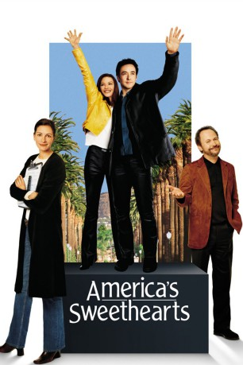
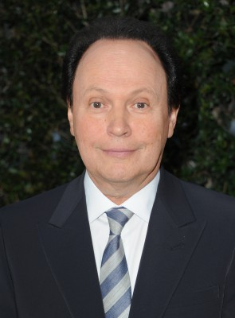
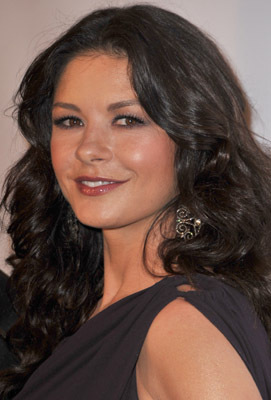
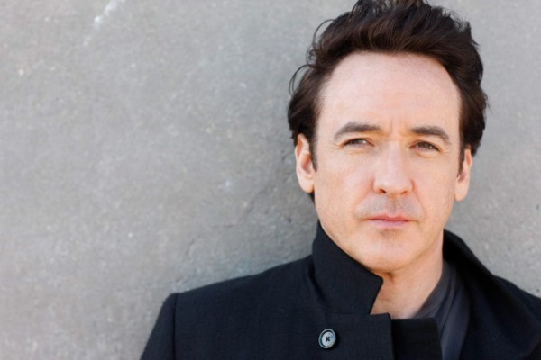
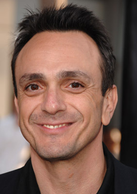
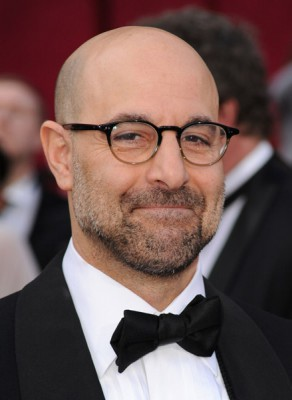
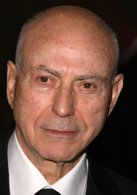
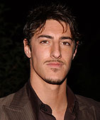
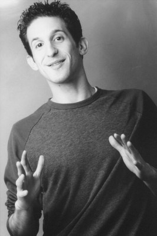
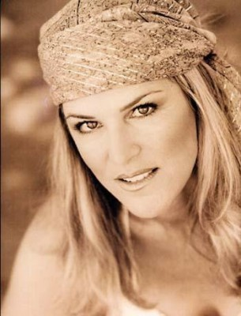

#6473 America's Sweethearts
 
 IMDB-Wertung: 5.7 / 10
IMDB-Wertung: 5.7 / 10  Tomatometer: 32
Tomatometer: 32  Metascore: 0
Metascore: 0 
Eddie und Gwen sind das Traumpaar Hollywoods. Doch jenseits der Leinwände hängt ihre Ehe schon lange in den Seilen: Die launige Diva beschäftigt sich neuerdings lieber mit einem lispelnden Spanier und Eddie mit dem Nervendoktor. Ausgerechnet jetzt müssen sie noch ihren letzten gemeinsamen Film promoten. Um den schönen Schein zu wahren, soll eine herzzerreissende Versöhnung mediengerecht inszeniert werden - eingefädelt von PR-Zyniker Lee. Unterstützen soll ihn dabei Gwens Assistentin Kiki, die ganz nebenbei auch noch ihre Schwester ist. Kiki hat alle Hände voll zu tun, die beiden Streithähne zusammenzubringen - und die Tatsache, dass sie Eddie bei der ganzen Geschichte immer näher kommt, macht die Sache auch nicht gerade leichter...
Jahr: 2001
Dauer: 103 Minuten
FSK: 6
Land: USA Studio: Columbia PicturesTonspuren: DTS - ,
Untertitel:
Auflösung: 1080p (1920x800) Größe: 7301 MB
Genre: Komödie, Liebe
Regisseur:  Joe Roth
Joe Roth
Drehbuch: Billy Crystal
Soundtrack:
Darsteller:
 Julia Roberts als Kathleen Kiki Harrison
Julia Roberts als Kathleen Kiki Harrison-  Billy Crystal als Lee Phillips
-  Catherine Zeta-Jones als Gwen Harrison
-  John Cusack als Eddie Thomas
-  Hank Azaria als Hector Gorgonzolas
-  Stanley Tucci als Dave Kingman
 Christopher Walken als Hal Weidmann
Christopher Walken als Hal Weidmann-  Alan Arkin als Wellness Guide
- Seth Green als Danny Wax
- Scot Zeller als Davis
 Larry King als Larry King
Larry King als Larry King- Steve Pink als Limo Driver
- Rainn Wilson als Dave O'Hanlon
-  Eric Balfour als Security Guard
-  Marty Belafsky als Security Guard
- Keri Lynn Pratt als Leaf Weidmann
- Maria Canals-Barrera als Adinah
- Shaun Robinson als Nevada Anchorwoman
- Jane Yamamoto als Reporter on Patio
- Byron Allen als Byron Allen
- Wendy Schenker als Maura Klein
- Lisa Joyner als Laura Messinger
- Patrick Stoner als Bob
- Maree Cheatham als Matronly Interviewer
- Alexander Enberg als Larry King Producer
- Sarah Loew als Larry King Producer
-  Julie Wagner als Caller #1
- Leilani Münter als Caller #2
- Shawn Driscoll als Sean
- Candice T. Cain als Court Reporter , uncredited
- Ann Cusack als Assistant to Lee Phillips , uncredited
- Raquel Horton als Dancer , uncredited
- George D. Miklos als Cop , uncredited
- Emma Roberts als Girl in Purple T-shirt , uncredited
- Charley Steiner als Nevada Anchorman
- Jeff Michael als Network Anchor
- Sibila Vargas als Reporter
- Jim Ferguson als Mort Josephson
- Sam Rubin als Ken
- Susan Katz als Interviewer
- Joseph Feingold als Judge
- Sherry Jennings als Bar Hostess
- Julie Sorrels als Mother
- Austin L. Sorrels als Little Boy
- Dimitri Moraitis als Agent
- Misti See als Misti
- Gail Laskowski als Gail
- Joel Ariniello als Hollywood Press , uncredited
- Amber Barretto als Alison , uncredited
- Heather Charles als Reporter #7 , uncredited
Datei: X:\2001\America's Sweethearts (2001, FSK6, 1920x800).mkv seit 27.06.2017
Festplatte: HD 1996-2002
 Es gibt insgesamt 102 Filme in der Gruppe '2001'
Es gibt insgesamt 102 Filme in der Gruppe '2001'